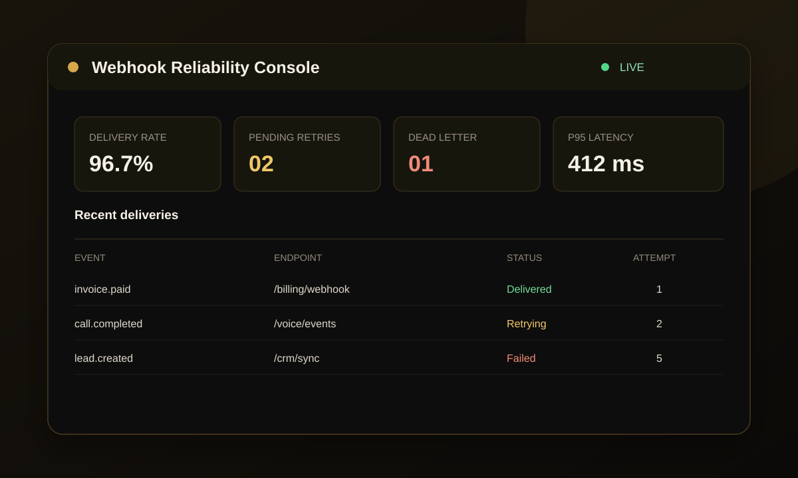
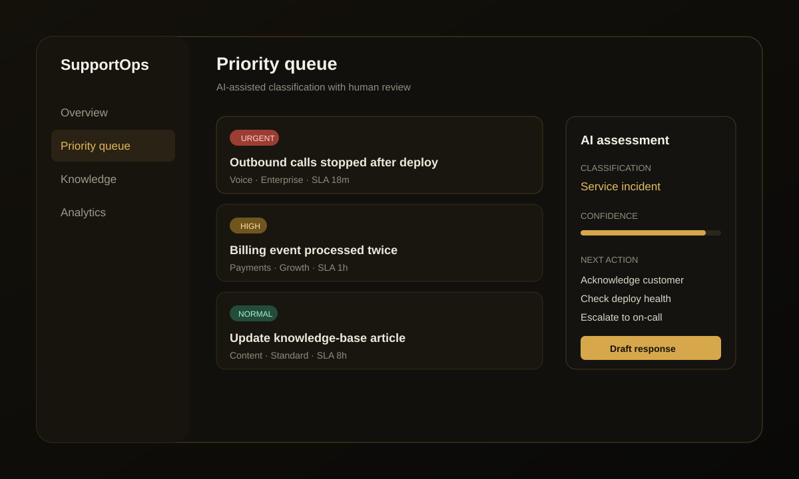
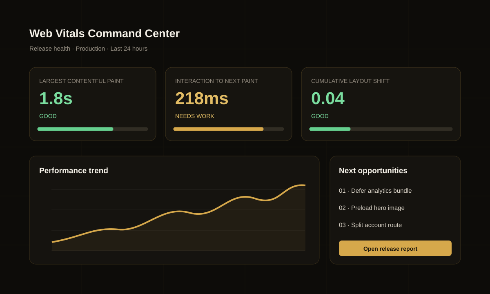
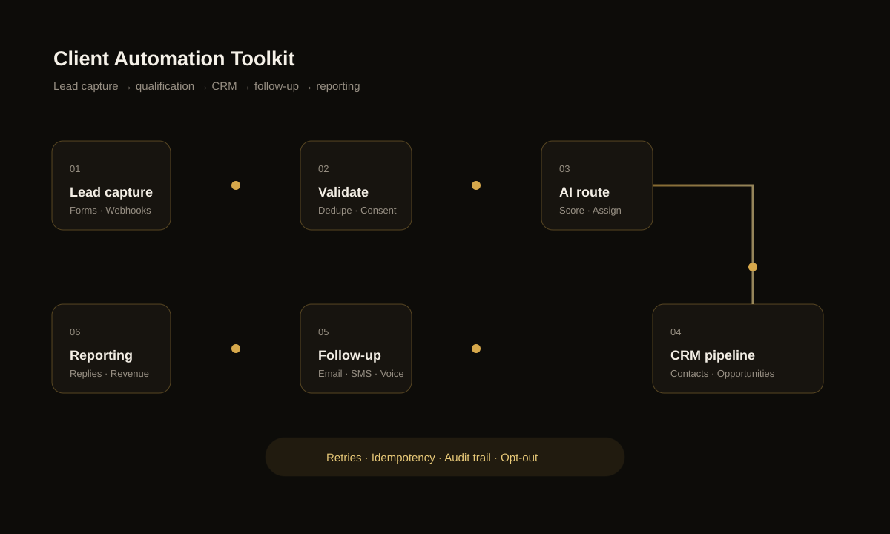

Software engineering partner · Remote worldwide
Software that fixes real business bottlenecks.
I design and ship websites, product interfaces, backend services, CRM workflows, and AI automation for teams that need a dependable technical partner.
The problem
Growth slows when the software around the work cannot keep up.
Leads disappear between forms and inboxes. Teams repeat manual steps. Slow or confusing interfaces lose customers. Quick prototypes become fragile systems that nobody wants to maintain.
Leads are leaking
Forms, calls, email, and WhatsApp are disconnected, so enquiries receive slow or inconsistent follow-up.
Manual work is scaling
People copy data between tools, chase routine updates, and spend time on operations that should be automated.
The product feels fragile
Performance problems, unreliable integrations, and rushed code make every release slower and riskier.
The solution
One partner from problem to production.
I can improve an existing system or build the missing piece: a conversion-focused website, a customer portal, an API integration, an operational dashboard, or an automation workflow. These systems show how I approach delivery.

01Reliability engineering
Webhook Reliability Console
An operations console for inspecting event deliveries, diagnosing failed webhooks, and retrying safely without creating duplicate downstream actions.
- Models delivered, retrying, and dead-letter states
- Surfaces attempts, endpoint health, and p95 latency
- Built around idempotent retry and auditability patterns
TypeScriptWebhooksIdempotencyObservability

02Applied AI operations
AI Support Triage Workspace
A human-reviewed support workspace that turns incoming issues into a prioritized queue with clear ownership and recommended next actions.
- Priority, SLA, category, and confidence signals
- Draft-response workflow with human approval
- Designed for auditable escalation, not blind automation
AI workflowsSupport opsHuman review

03Frontend performance
Web Vitals Command Center
A release-focused performance interface that makes Core Web Vitals understandable and turns measurements into an engineering queue.
- Tracks LCP, INP, CLS, trends, and release health
- Prioritizes bundle, asset, and route-level opportunities
- Responsive, accessible dashboard presentation
Web performanceCore Web VitalsUX

04Business automation
Client Automation Toolkit
A delivery blueprint for connecting public lead research, validation, CRM state, AI-assisted qualification, multichannel follow-up, and reporting.
- Evidence-backed enrichment and duplicate suppression
- Consent, opt-out, retry, and failure-handling controls
- Adaptable to n8n, GoHighLevel, and custom APIs
CRMn8nAPIsAI agentsAutomation
How it works
A clear path from bottleneck to working software.
Every engagement starts small enough to evaluate quickly and ends with something your team can operate.
- 01
Diagnose
A 15-minute call identifies the business constraint, users, current tools, and the outcome that matters.
- 02
Define
You receive a focused scope, delivery plan, milestones, and a clear price before implementation starts.
- 03
Build
I design, implement, integrate, and test in reviewable increments with regular progress demonstrations.
- 04
Launch and support
The system is deployed with documentation, handoff, measurement, and optional ongoing maintenance.
FAQs
What clients usually ask before we start.
What can you build?
Business websites, web applications, dashboards, customer portals, Node.js APIs, CRM workflows, lead systems, AI chat or voice workflows, integrations, and reliability improvements.
Can you improve an existing product?
Yes. I can audit the current interface or codebase, isolate the highest-impact issue, and deliver a focused improvement without forcing a full rebuild.
How quickly can we start?
I can usually begin discovery immediately. A small audit, repair, or prototype can often start as the first paid sprint before a larger commitment.
How will we communicate?
You receive a clear scope, milestone updates, review links, and early notice of decisions or blockers. Remote collaboration can run through email, Slack, Zoom, or your preferred project tool.
Will we own the code and be able to maintain it?
Yes. Deliverables include the agreed source code, deployment configuration, and practical handoff documentation. I favor common technologies and maintainable boundaries.
Start with the bottleneck
Tell me what is slowing the business down.
Send the problem, the current setup, and the outcome you want. I will reply with the most practical next step and whether a small paid sprint makes sense.